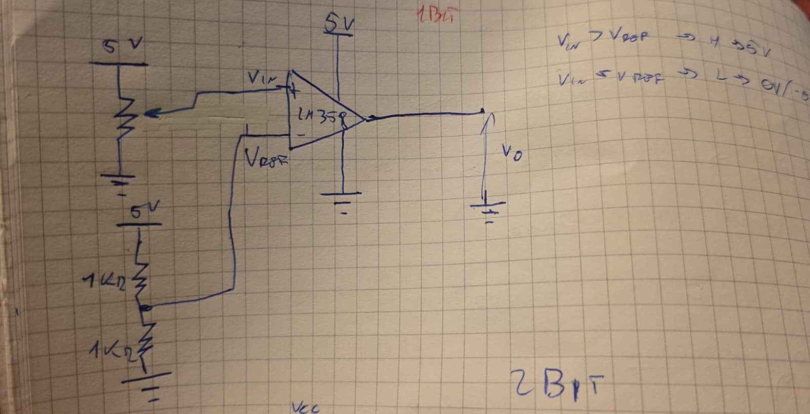
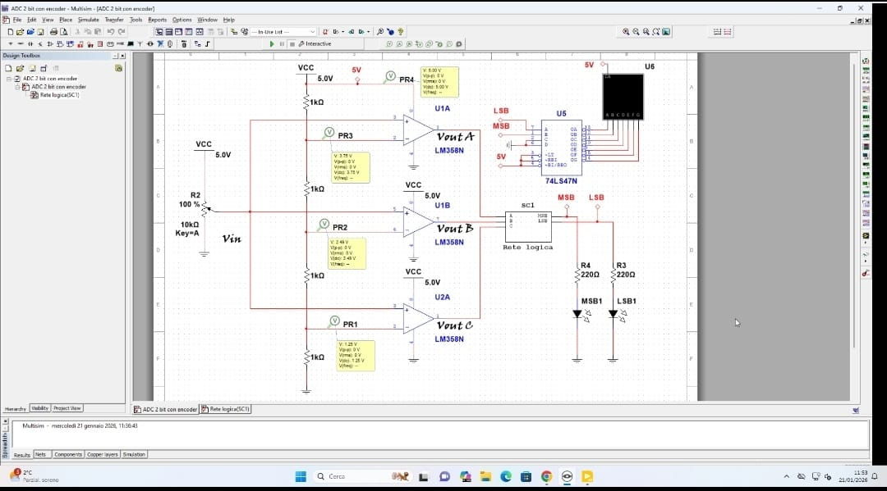
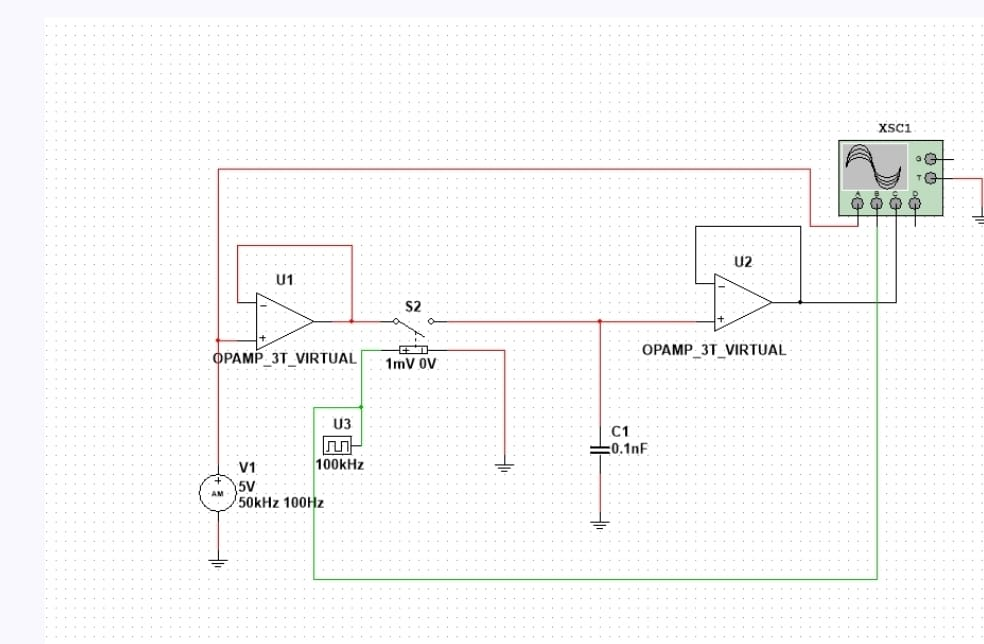
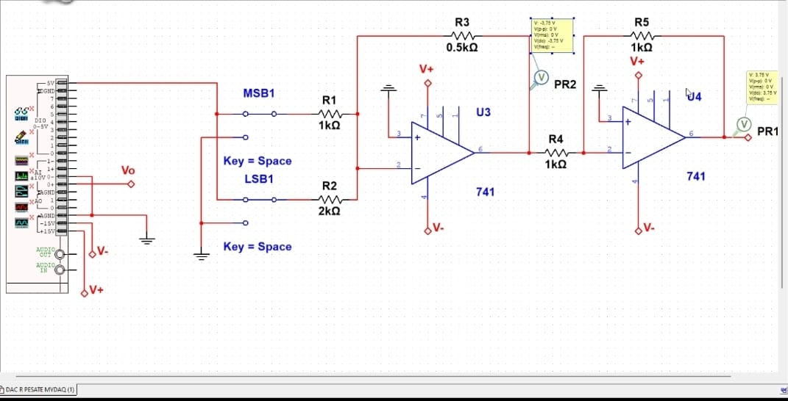
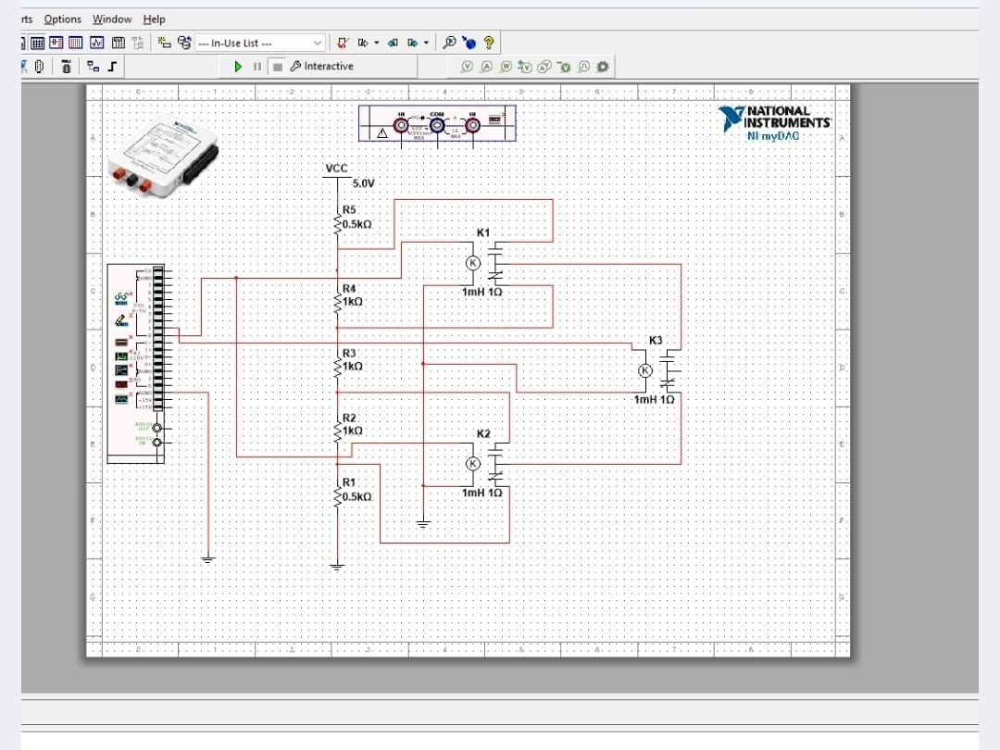

ADC Flash · Sample & Hold · DAC a R Pesate · DAC a Relè

Un ADC (Analog-to-Digital Converter) converte un segnale analogico continuo in un numero digitale. Il tipo Flash è il più veloce: tutti i confronti avvengono simultaneamente in parallelo, in un solo colpo di clock.
La versione a 1 bit è la più semplice: un unico comparatore confronta Vin con Vref e produce 1 oppure 0.
È un op-amp in configurazione open-loop (senza retroazione). Il guadagno enorme porta l'uscita a saturazione anche per differenze minime tra i due ingressi:
Vin > Vref → uscita = HIGH (1)Vin < Vref → uscita = LOW (0)| Vin | Confronto | Dout |
|---|---|---|
| > Vref | V+ > V− | 1 |
| < Vref | V+ < V− | 0 |
Con 1 bit e VFS=5V ogni livello vale 2.5 V. Distinguiamo solo "sopra" o "sotto" la soglia.

Un ADC flash a 2 bit usa 2n−1 = 3 comparatori (LM358N). Tutti ricevono lo stesso Vin, ma ognuno confronta con una soglia diversa generata da un partitore a 4 resistenze uguali su Vcc=5V:
| Comparatore | Soglia Vref |
|---|---|
| U1A (superiore) | 3.75 V |
| U1B (medio) | 2.50 V |
| U2A (inferiore) | 1.25 V |
Le 3 uscite formano un codice termometro. La rete logica lo converte in 2 bit:
| Vin | C2 C1 C0 | MSB LSB | Livello |
|---|---|---|---|
| 0–1.25V | 0 0 0 | 0 0 | 0 |
| 1.25–2.5V | 0 0 1 | 0 1 | 1 |
| 2.5–3.75V | 0 1 1 | 1 0 | 2 |
| 3.75–5V | 1 1 1 | 1 1 | 3 |
L'MSB vale 1 quando almeno il comparatore mediano ha scattato.
L'LSB vale 1 quando solo il comparatore inferiore ha scattato, o tutti e tre.
Il chip 74LS47N (decoder BCD→7 segmenti) riceve MSB e LSB e pilota il display per mostrare 0, 1, 2 o 3. Le resistenze da 220Ω proteggono i LED MSB1 e LSB1.
Vin tramite le uscite analogicheCon n=2 otteniamo 4 livelli. Ogni bit aggiuntivo dimezza il passo di quantizzazione.

Il segnale analogico cambia continuamente. L'ADC ha bisogno di un valore stabile durante la conversione. Se il segnale variasse nel frattempo, la conversione sarebbe errata.
Il S&H "fotografa" il segnale in un istante e lo congela per tutta la durata della conversione.
SAMPLE (S chiuso)
Il condensatore si carica rapidamente. L'uscita segue l'ingresso in tempo reale.
HOLD (S aperto)
Il condensatore è isolato. La tensione rimane congelata al valore campionato.
La sorgente V1 è un segnale AM: portante 5V/50kHz modulata a 100Hz. Il clock U3 lavora a 100 kHz.
In fase HOLD il condensatore si scarica lentamente attraverso la Rin del buffer. Questa perdita progressiva si chiama droop ed è la principale non-idealità del circuito reale.
All'apertura di S, una piccola carica parassita viene iniettata nel condensatore causando un piccolo errore di tensione. È peggiore con condensatori di valore ridotto.

Un DAC converte un numero binario in una tensione analogica proporzionale. Il tipo a R pesate usa resistenze in rapporto 1 : 2 : 4 : 8… per pesare ogni bit in base alla sua posizione.
Ogni bit pilota uno switch: se il bit è 1, la resistenza è collegata a Vref; se è 0, è collegata a massa.
RMSB = metà di RLSB → porta il doppio della corrente → peso doppio.
Con Rf=0.5kΩ, R1=1kΩ, R2=2kΩ (il secondo op-amp 741 U4 inverte il segno):
| MSB | LSB | Vout attesa | Livello |
|---|---|---|---|
| 0 | 0 | 0 V | 0 |
| 0 | 1 | ≈ 0.94 V | 1 |
| 1 | 0 | ≈ 1.88 V | 2 |
| 1 | 1 | ≈ 2.81 V | 3 |
✓ Semplice da capire e veloce.
✗ Problema: con molti bit le resistenze variano enormemente (1kΩ, 2kΩ, 4kΩ, 8kΩ…). Difficile garantire precisione. Per questo in pratica si preferisce la rete R-2R.

Un relè è un interruttore elettromagnetico: una piccola corrente di controllo alimenta una bobina → campo magnetico → armatura si sposta meccanicamente → contatto apre o chiude un circuito separato.
Nel DAC, ogni bit digitale pilota la bobina di un relè che connette o disconnette una resistenza del partitore analogico.
Quando un relè si chiude, cortocircuita una sezione del partitore: la resistenza totale cambia e quindi cambia la tensione al nodo di uscita. Ogni combinazione di relè produce una tensione diversa:
Con 3 relè si ottengono 2³ = 8 livelli. Con n relè si ottengono 2n livelli.
Isolamento galvanico completo tra circuito digitale di controllo e carico analogico. Gestisce carichi ad alta potenza. Robusto ai disturbi elettrici.
Velocità limitata (ms, non ns). Usura meccanica dopo molte commutazioni. Rimbalzo dei contatti all'apertura/chiusura.
All'apertura del relè la bobina genera un picco inverso (back-EMF) che può bruciare il transistor di pilotaggio. Si protegge con un diodo di ricircolo in antiparallelo alla bobina.
| Caratteristica | ADC Flash | DAC R-Pesate | DAC Relè | S&H |
|---|---|---|---|---|
| Velocità | Altissima | Alta | Bassa | Alta |
| Componenti chiave | Comparatori | OpAmp + R | Relè + R | Switch + C |
| Isolamento galvanico | No | No | Sì | No |
| Chip usato in lab | LM358N | 741 | myDAQ | OPAMP_3T |